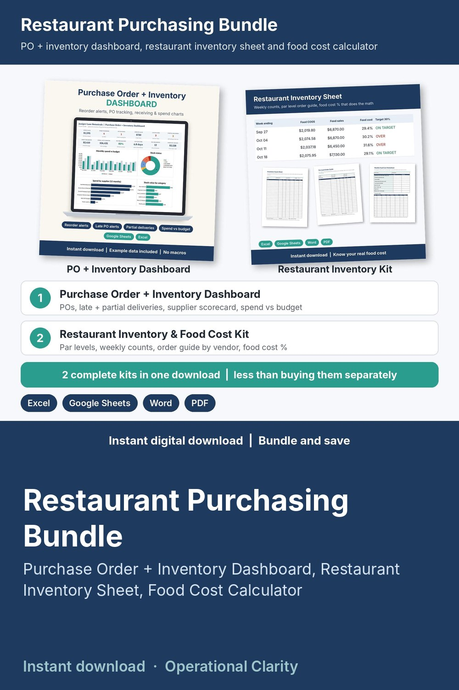

Restaurant Purchasing Bundle

Two restaurant purchasing kits in one download for less than buying them separately: a Purchase Order + Inventory Dashboard and a Restaurant Inventory Sheet with Food Cost Calculator, so you count, order to par, track every PO and know your food cost % each week.
WHAT'S INSIDE
- Purchase Order + Inventory Dashboard (Excel / Google Sheets, 10 tabs):
* DASHBOARD with 12 KPI tiles and 4 charts (monthly spend vs budget, stock status, spend by supplier, stock value by category), a REORDER NOW list and a LATE + DUE SOON list
* Inventory with reorder alerts: on hand, on order, days of stock, run-out date and the exact quantity to order
* PO Log with LATE / DUE SOON alerts, Receiving Log for partial and damaged deliveries, Stock Out Log, Suppliers scorecard (on-time %, lead time), Monthly Spend vs budget, printable Purchase Order
* START HERE guide (PDF): 20-minute setup and a 10-minute weekly routine
- Restaurant Inventory & Food Cost Kit:
* Restaurant Inventory & Food Cost Calculator (Excel / Google Sheets): items and par levels, weekly counts, inventory value by storage area, food and beverage cost %, waste by reason and an Order Guide with cases to order by vendor
* Word + PDF: inventory count sheet, bar & beverage count sheet, par level order guide, receiving log, food cost worksheet and waste log
* START HERE guide
- Bundle START HERE guide (PDF) that tells you where to begin
HOW IT WORKS
1. Count night: print the count sheets, enter the counts; the Order Guide shows the cases to order from each vendor.
2. Place the order as a PO in the Dashboard and log each delivery. Late and partial deliveries are flagged and supplier on-time % updates.
3. Each week see food cost %, beverage cost %, inventory value and waste, plus monthly spend vs budget.
Example data shows how everything connects; delete it and type your own. Yellow cells = type here, green cells = calculated. No macros.
BEST FOR
Restaurants, cafes, food trucks, bars and caterers that order from several vendors every week.
FORMATS
- Excel .xlsx (works in Excel and Google Sheets)
- Word .docx (edit in Word, Google Docs, Pages or LibreOffice) + PDF, US Letter
This is an instant digital download, no physical item will be shipped.
Editable templates, not accounting or tax advice. Follow your local health code for food storage and receiving.